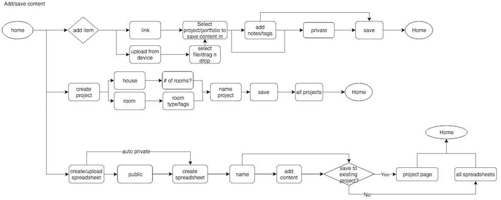
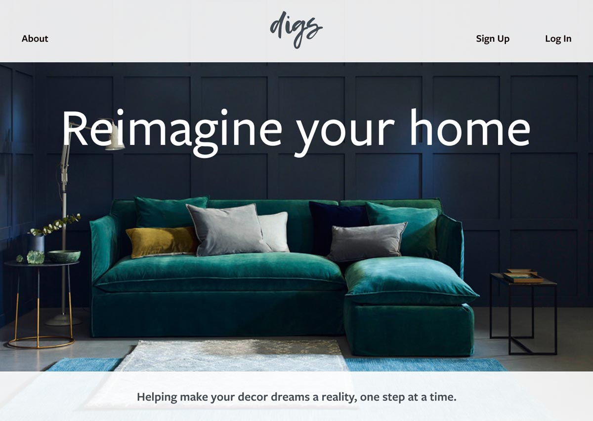

Digs helps people make the most of their decor dreams with features tailored specifically to their design needs, like budget spreadsheets and projects configured for different dwellings.
Role
Researcher
Designer
Tools
Google Forms
Figma
InVision
Digs
Digs helps people make the most of their decor dreams with features tailored specifically to their design needs, like budget spreadsheets and projects configured for different dwellings.
User Goals
Upload various types of files.
Save things found online.
Collaborate with family members.
Create or upload spreadsheets to calculate costs and budget projects.
Competitors
Takeaways
Create new features like the budget spreadsheets, and specfically tailoring the experience for home decor projects, to differentiate this product.
Not everyone wants to pay for the best features, having a free app ensures greater reach.
Inconsistencies will cost you users.

User Flows
Sign up for a new account.
Log in to an existing account.
Upload content.
Create a project.
Organize content uploaded.
Create a new spreadsheet.
Wireframe Sketches
Takeaways
Keep design consistent with other cloud/media sharing sites so users understand where everything is.
Illustrate brand in other ways.
Clickable Prototype
Usability Test Results
What is this? (when looking at the dashboard)
I'd like suggestions for interests (when creating profile)
Am I done? (when adding content/creating projects)
I wanted something that would reflect the DIY nature of the audience, which is where the design on the left comes from. Ultimately, it felt too detailed to work at a smaller scale, and less friendly. That is what led me to choose the design on the right - it feels contemporary and playful, like a user may have scribbled it out themself.
Style Guide
FreightSans Pro - rigid but less formal than a serif.
Gemeli Mono - Keeps numbers evenly lined up on spreadsheet.
Color Palette - blue and grey are popular home decor colors, green provides good contrast.

High Fidelity Mock Ups
Preference Testing
Takeaways
The response was split almost perfectly evenly, but no one seemed enthusiastic about either option, so I decided to try a few more options.
Clear majority of users preferred the fourth image due to it seeming inherently more “homey,” with an appealing color palette.
Users preferred the white body with a dark blue navbar by a large margin.
High FIdelity Prototype
Takeaways
Lack of familiarity with the branding. The “d” logo for Digs in the upper left hand corner did not draw enough attention for them to intuitively understand what it was.
More dialog pages explaining where in a process the user was, i.e. if they had finished creating a project, or adding content.
Final Design
Future
Professional/paid subscription option.
Further define social sharing procedures.
Customer service chat feature.
Takeaways
Break processes down as much as possible. Don't assume users know what's going on if you haven't explained it thoroughly.